明洞餃子
明洞代表性老字號美食。招牌刀削麵以寬扁滑順的麵條搭配肉末、洋蔥與櫛瓜等配料，湯頭帶有濃郁鮮香；桌邊泡菜酸辣開胃，也可以直接加入麵湯一起吃。第一次來明洞，建議把它當成「快速、道地、吃完再繼續逛街」的一站。
台北松山 (TSA) ⇄ 首爾金浦 (GMP) | 團號：OGL111704BR6 | 乙晚國際五星飯店
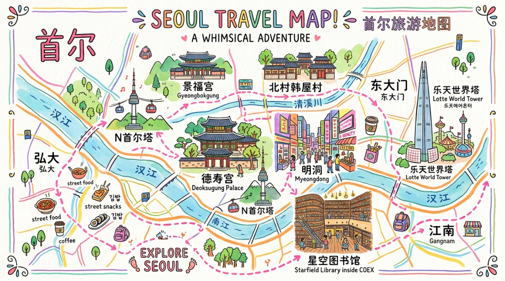
明洞不是只有一條購物街，而是由明洞站、乙支路入口站與周邊巷弄組成的大型商圈。第一次來最容易遇到的問題不是「沒有東西買」，而是店太多、不知道怎麼排。這裡把行程中的餐廳與購物店拆成獨立攻略：先看特色，再決定要吃、要買、要拍照，並可依照晚餐、宵夜、伴手禮與服飾購物自由組合。根據 2026 年明洞攻略資料，明洞商圈的店家營業時間差異很大，夜市攤販通常傍晚後才逐漸熱鬧；若想感受完整的明洞氣氛，建議把自由活動安排在傍晚以後。
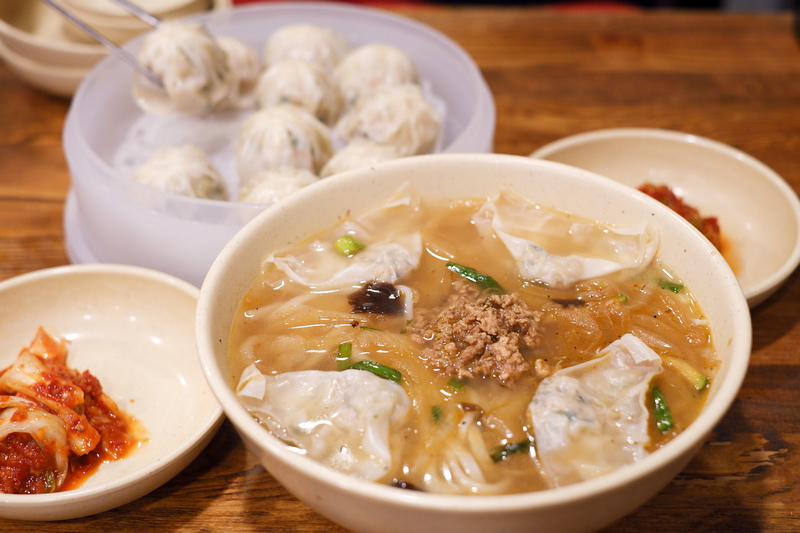
明洞代表性老字號美食。招牌刀削麵以寬扁滑順的麵條搭配肉末、洋蔥與櫛瓜等配料，湯頭帶有濃郁鮮香；桌邊泡菜酸辣開胃，也可以直接加入麵湯一起吃。第一次來明洞，建議把它當成「快速、道地、吃完再繼續逛街」的一站。
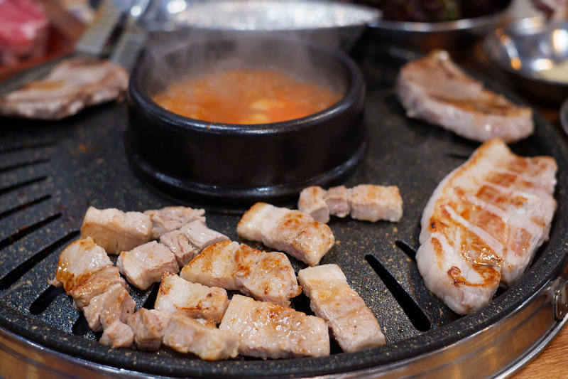
主打韓式豬五花吃到飽，除了烤肉，也搭配生菜、泡菜、豆芽、蔥絲、豆腐與大醬湯等配菜，適合多人一起吃、邊烤邊聊天。豬五花建議用生菜包蒜片、泡菜一起入口，油脂與酸辣味可以互相平衡；如果逛街逛到很餓，這家屬於份量感比較強的選擇。

在地經營多年的豬腳餐廳，招牌是切片豬腳搭配蒜泥、泡菜與各式小菜一起吃。豬腳口感偏Q彈軟嫩，蒜泥口味香氣明顯但不會搶走肉味；份量通常適合多人分享，也很適合排在明洞夜間行程，吃完再繼續逛街或找宵夜。
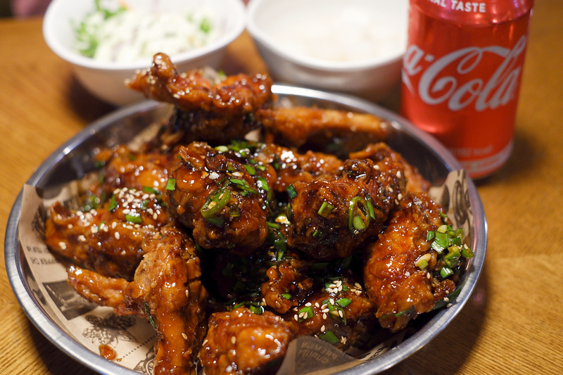
韓國經典炸雞品牌，明洞逛街到晚上很適合把它安排成「炸雞＋飲料」的休息站。BHC口味選擇多，其中起司粉風味香氣濃郁，醬油風味則比較適合喜歡鹹香口味的人。炸雞份量適合分享，若同行人數較多，可以一次點兩種口味比較有趣。
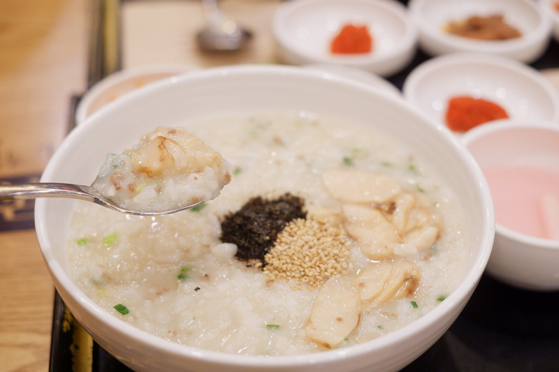
韓國大型粥品連鎖品牌，適合早餐、早午餐或前一晚吃得比較油膩後換個口味。菜單選擇很多，從鮑魚粥、海鮮粥到牛肉與蔬菜類都有，口感溫和、份量也有飽足感。對不太能吃辣或同行有長輩、小朋友的旅客來說，是明洞很方便的備選餐廳。
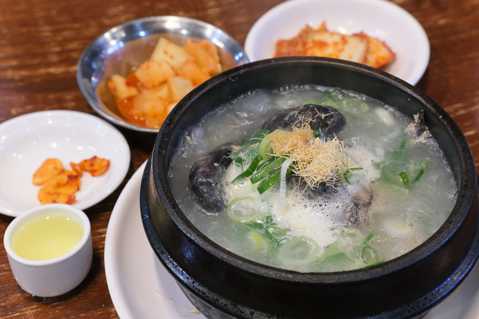
明洞老字號蔘雞湯餐廳，整隻雞燉煮後填入糯米、紅棗與人蔘，湯汁溫潤、香氣帶有淡淡人蔘味，並常搭配人蔘酒一起享用。適合天氣偏冷、想吃一份完整熱食時安排；如果喜歡濃厚重口味，則要注意它的湯頭走的是較清爽路線。

明洞的人氣角色周邊據點，店面本身就是拍照亮點。除了熊大、兔兔、莎莉等 LINE FRIENDS 角色，也可看到 BT21 等人氣聯名商品，從玩偶、文具、帽子、雨傘到生活雜貨都有。適合喜歡角色商品、想找韓國限定周邊，或只是想拍一組可愛旅行照片的人。
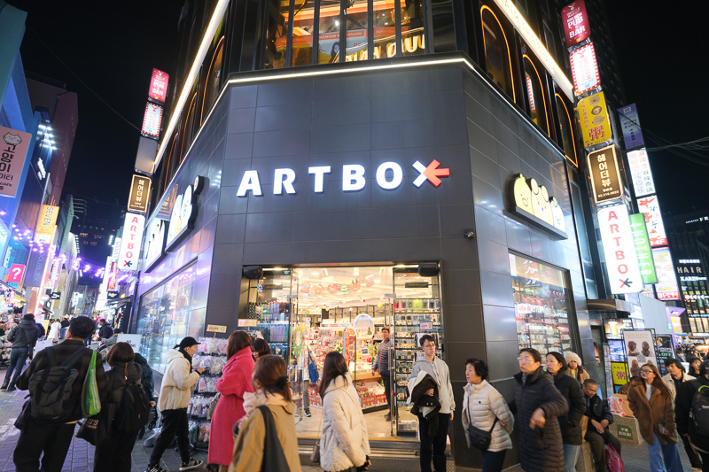
韓國人氣文具與生活雜貨連鎖店，最適合安排在明洞購物路線中「隨逛隨買」。店內從筆記本、貼紙、卡片、筆類到收納、生活小物都有，設計風格可愛又有韓國日常感。單價相對容易入手，很適合一次買多份小禮物回台灣分送同事、朋友。
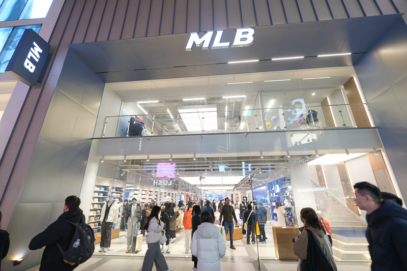
MLB在韓國市場以街頭休閒與棒球元素穿搭聞名，明洞店很適合一次比較帽款、上衣、外套與包款。最容易入手的是棒球帽與 Logo 單品，尺寸與款式選擇通常也比較完整。若想買具有韓國街頭感、又不會太難搭配的服飾，這一站可以留在購物後半段再決定。
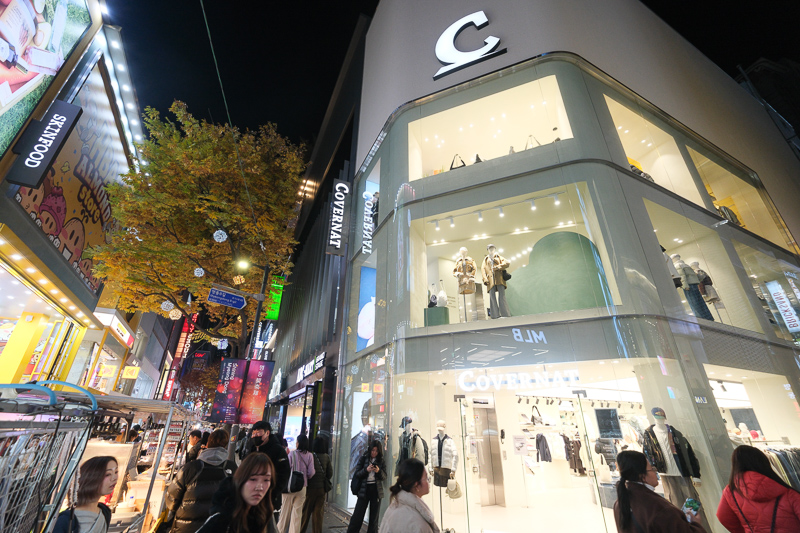
韓國代表性的休閒街頭品牌之一，風格偏向寬鬆、日常、復古與校園感。T-shirt、帽T、外套與帽款都很容易融入日常穿搭；明洞逛街時可以特別留意季節限定與聯名款。若同行旅伴喜歡韓系穿搭，這家比單純買紀念品更值得留時間慢慢看。

主打年輕、休閒與相對容易入手的韓系服飾，適合想一次看很多平價款式的旅客。除了上衣、毛衣與外套，也常能找到帽子、圍巾等配件。建議把它安排在明洞主街逛街的中後段，先比較其他品牌價格與版型，再決定要不要下手，購物會更有效率。
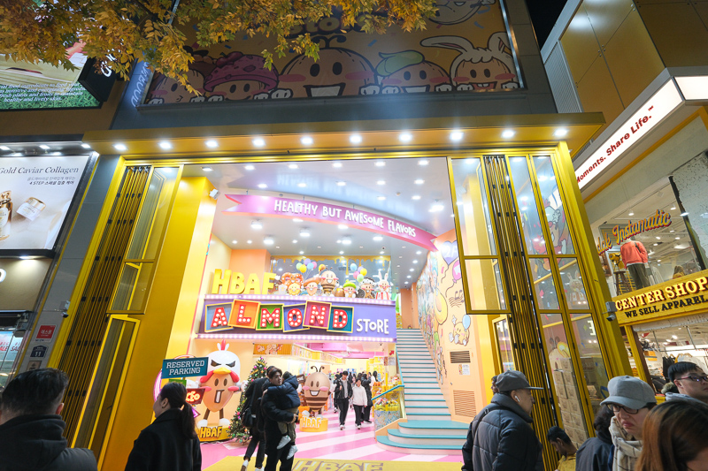
韓國人氣杏仁零食品牌，特色是把原味杏仁做成多種鹹甜口味，像蜂蜜奶油、芥末、辣味與海苔等，適合買幾種小包裝回家分送。明洞專賣店的陳列與包裝很有伴手禮氣氛，不過若目標是大量採購，建議同時比較超市與其他通路價格；如果只是想買幾盒特色口味，專賣店則很方便。
下午搭乘長榮豪華班機直飛首爾金浦機場。辦理入境通關後專車前往漢江新都市的金光水路，漫步於素有「韓國小威尼斯」美稱的人工水岸商街，欣賞韓劇《愛麗絲 Alice》取景的水道與璀璨夜間燈光秀。
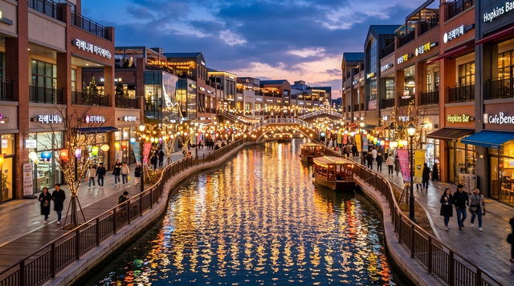
早晨前往江南 COEX 拍下 13 米高巨型書牆的星空圖書館；接續探訪首爾潮流心臟聖水洞的紅磚工廠與限定快閃店；午後於石村湖畔仰望樂天世界塔（外觀），並在世界最大室內外的樂天世界主題樂園暢玩經典遊樂設施約 3～4 小時！
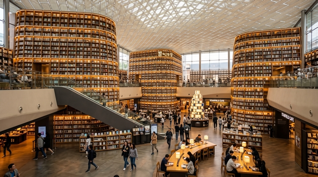
參觀彩妝坊領取專屬見面禮；漫步 1920 年代古意盎然的益善洞韓屋村文青小巷；參訪兼具朝鮮古殿與西洋石造殿宇的德壽宮；午後欣賞震撼視覺的新塗鴉秀動態藝術表演，晚間在全首爾最繁華的明洞鬧區盡情品嚐街頭小吃與採購！
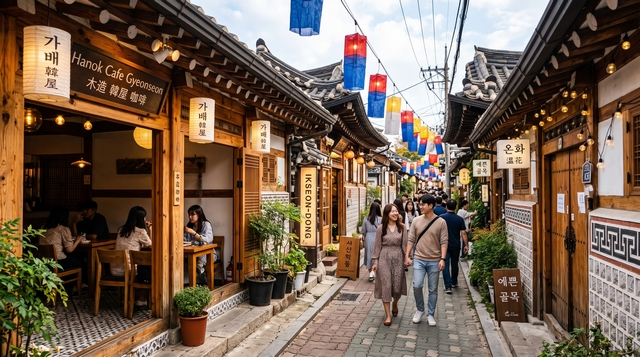
飯店早餐後前往當地大型超市展開伴手禮最後衝刺，泡麵、海苔酥、特色零食一次買足。專車抵達金浦國際機場辦理退稅登機，搭乘長榮客機飛返台北松山機場，滿載美好回憶返抵家門。
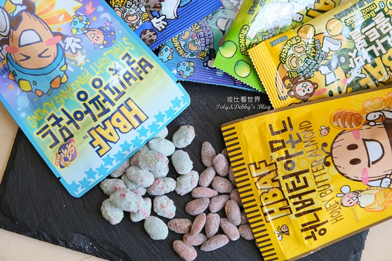
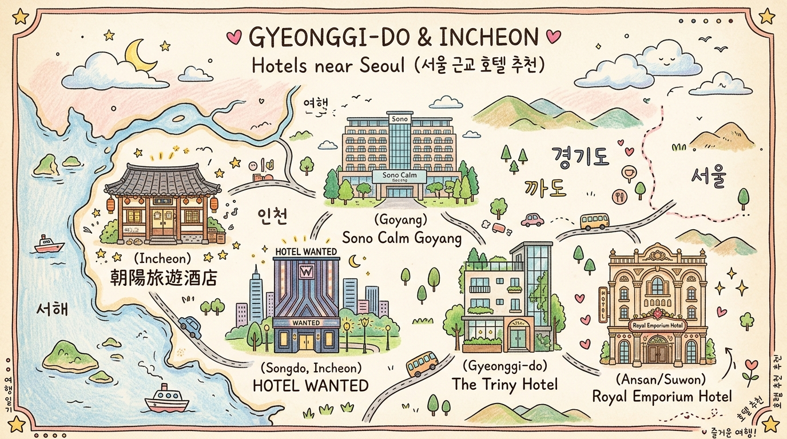
京畿道北部首屈一指的國際五星奢華度假飯店，客房寬敞明亮，休閒設施完善。
座落仁川西區青羅周邊，現代簡約商務風格，提供舒適典雅的客房住宿體驗。
位於仁川北港新興商務區，現代精品設計感，房間寬敞配備獨立浴缸與先進衛浴。
位於仁川永宗島月尾島海邊旁，海景視野優美，步行即可感受海岸度假風情。
座落京畿道龍仁市中心，屬於大空間公寓式精品套房飯店，周邊生活機能與餐飲極佳。
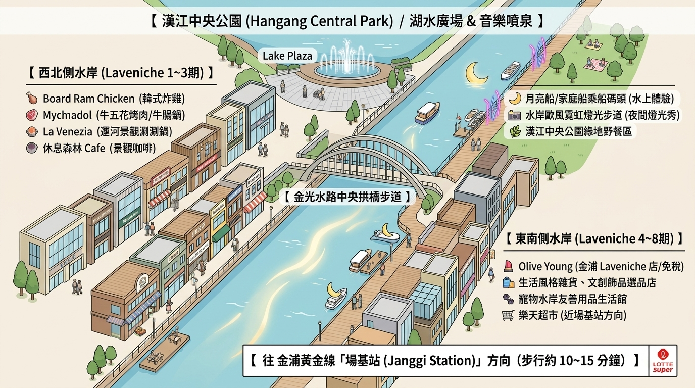
景點介紹：金浦漢江新都市的核心人工運河，長達 2.68 公里，被譽為「韓國小威尼斯」[cite: 4]。兩側林立歐風商業街、咖啡座與特色美食餐館。夜間水道兩旁的噴泉、霓虹造景與圓形月亮船相互輝映，是韓劇《愛麗絲 Alice》、《歡迎來到王之國》等多部作品的浪漫拍攝舞台[cite: 4]。
景點介紹：位於江南 Starfield COEX Mall 地下商場中心，佔地達 2,800 平方公尺[cite: 4, 11]。以 3 座高達 13 公尺的壯麗挑高書架為核心，收藏逾 5 萬冊書籍雜誌[cite: 4]。透過天花板網格天窗灑落的自然採光，融合幾何建築線條，是首爾最具代表性的室內視覺盛宴[cite: 4]。
景點介紹：過去為製鞋業老工廠與皮革倉庫，近年由新銳設計師與文創品牌翻新，蛻變為首爾潮流新核心[cite: 4, 5]。紅磚工業風建築融入各大國際精品快閃店（Pop-up Store）、潮流服飾旗艦店（如 ADER ERROR、Tamburins、Dior）與特色咖啡廳[cite: 4, 5]。
| 分類 | 店家名稱 | 亮點與特色必買/必吃 |
|---|---|---|
| 國際地標 | Dior Seongsu 概念旗艦店 |
經典蒙田大道風格玻璃宮殿外觀，聖水洞必拍地標。 |
| 潮牌/美妝 | TAMBURINS 聖水 | Jennie 代言香氛、護手霜與固體香膏，店內大型雕塑藝廊感十足。 |
| Matin Kim 旗艦店 | 韓國大勢女團愛用品牌，招牌金屬鐵牌皮夾、水洗單寧與街頭服飾。 | |
| STAND OIL / emis | STAND OIL 人氣平價腋下包/托特包；emis 必搶版型修飾臉型棒球帽。 | |
| Olive Young N 聖水 | 2024全新開幕5層樓全韓最大旗艦店，品項最齊全且支援個人色彩診斷。 | |
| 排隊美食 | 祖傳三代馬鈴薯排骨湯 | 24小時營業老字號名店，排骨燉得軟嫩多汁，最後必加點炒飯或泡麵。 |
| 自然島鹽麵包 / BETON | 外皮酥脆底層焦香的超人氣出爐鹽可頌，適合外帶邊走邊吃。 | |
| 特色咖啡 | Cafe Onion 聖水店 | 老舊工廠廢墟風始祖，開闊頂樓天台，招牌雪山麵包 (Pandoro)。 |
| 大林倉庫 / NUDAKE | 大林倉庫紅磚藝術藝廊展覽；NUDAKE（GM旗下）如藝術品般的前衛甜點。 |
景點介紹：榮獲金氏世界紀錄認證為「世界最大室內主題樂園」，包含室內「探險世界」與戶外石村湖上的「魔術島」[cite: 4, 8]。擁有超過 30 種尖端設施（如法國大革命過山車、激流勇進、亞特蘭蒂斯、旋轉木馬），全天候不受晴雨天候影響[cite: 4, 8]。
| 項目分類 | 設施 / 體驗名稱 | 遊樂方式、特色與拍照訣竅 |
|---|---|---|
| 戶外魔幻島 | 亞特蘭提斯 (Atlantis) 72度高速衝刺雲霄飛車 |
全園最夯！結合急流泛舟與雲霄飛車，72度極速俯衝且不濺濕，建議開園第一時間衝或善用快速通關。 |
| 特快彗星號 / 自由落體 | 彗星號在全黑宇宙中360度旋轉；自由落體則在近70公尺高空旋轉俯瞰全景後瞬間下墜。 | |
| 室內探險世界 | 法國大革命 (過山車) 搭乘預約制 / 單人道 |
在室內建築梁柱穿梭的垂直與水平大迴旋，入場後需優先抽預約單或走「單人通道（Single Rider）」加速排隊。 |
| 激流勇進 / 氣球飛行 | 激流勇進為室內火山歷險；氣球飛行於6層樓高空俯瞰全園，夜間燈光亮起最浪漫[cite: 1]。 | |
| 經典拍照位 | 魔幻城堡 (Magic Castle) 戶外拱橋 / 湖畔長椅 |
正面拱橋拍全景；晚間 20:40 上演 3D 燈光投影秀[cite: 1]，打光倒映在石村湖面效果最夢幻。 |
| 旋轉木馬 (Camelot Carousel) 室內 1F 拍照專區 |
經典韓劇浪漫取景地[cite: 5]，站在木馬正面中央以暖光為背景，抓拍童話感個人照或情侶照。 | |
| 韓妞體驗 | 韓式高中校服租借 梨花校服 / 蠶室感性校服 |
韓國年輕人熱門玩法，換上精緻百褶裙、西裝制服在城堡和木馬前街拍，彷彿置身韓劇場景[cite: 1]。 |
景點介紹：樓高 123 層、總高 555 公尺，名列世界高塔建築前茅[cite: 4, 5]。流線型造型融合韓國傳統瓷器與毛筆曲線美學，亦為電影《與神同行》取景地[cite: 4, 5]。本行程安排於石村湖畔仰望拍照，感受其直聳入雲的雄偉氣魄[cite: 5]。
景點介紹：建於 1920 年代，是首爾最具歷史代表性的平民集合型韓屋區[cite: 4, 5]。在僅 801 公尺蜿蜒曲折的小巷裡，低矮傳統黑瓦屋頂下改裝成獨特香氛店、古著選品店、文青茶室與排隊名店（如手撕蒸氣吐司 Mil Toast），處處洋溢典雅又前衛的新復古氛圍[cite: 5, 8, 12]。
景點介紹：首爾五大宮殿之一，是大韓帝國（1897）高宗皇帝實施近代化新政的核心舞台。它是首爾唯一同時座落傳統朝鮮木造殿宇（中和殿）與西洋新古典主義石造殿宇（石造殿）的王宮[cite: 5]。宮門外的「德壽宮石牆路」更是韓國最著名的漫步約會名所。
演出亮點：跳脫靜態美術館框架！結合現場動態素描、沙畫、夜光炫彩畫與 3D 立體投影互動，四位身手矯健的演員以默劇幽默與超凡畫技，在節奏明快的音樂下現場重現李小龍、梵谷等世界名畫，無語言隔閡，各年齡層皆能盡情沈浸其中[cite: 4, 5]。
商圈亮點：首爾流行時尚的旗艦心臟地帶！匯聚全首爾規模最大的 Olive Young 旗艦店、各大韓潮服飾與美妝店[cite: 5, 10]。發放 5,000 韓元餐費自由覓食[cite: 4, 5]，傍晚起更湧現豐富街頭攤販：香濃雞蛋糕、起司年糕串、辣炒年糕、黑糖餅、旋風馬鈴薯與明洞刀削麵，滿足所有味蕾！
此為團體行程安排之專屬購物參觀站，參團貴賓每人可獲贈精美見面禮乙份[cite: 5, 12]。現場主要展示韓國專利高科技保養研發品項。
建議抱持理性消費原則，優先檢視產品成分、規格、效期，並評估是否適合個人膚質，挑選真正需要的明星保養品即可[cite: 12]。